Benchmarking Approach
This vignette describes the benchmarking approach used to compare the
performance of the Tensor-Times-Matrix (TTM) and Tensor-Times-Tensor
(TTT) operations in the tensory package against the widely
used rTensor package.
The tensory package implements a highly optimized,
zero-copy sliced DGEMM approach in its C++ backend.
Benchmark Components
1. TTM Performance Comparison
We start with a performance comparison using bench::mark
with a large fixed-size tensor and matrix for TTM:
library(tensory)
library(bench)
library(ggplot2)
# Create a random 3-mode tensor (100x100x100) and a matrix (50x100)
set.seed(123)
dims <- c(100, 100, 100)
data <- rnorm(prod(dims))
t_tensory <- tensory::Tensor$new(data = data, dim = dims)
t_rtensor <- rTensor::as.tensor(array(data, dim = dims))
mat <- matrix(rnorm(50 * 100), nrow = 50, ncol = 100)
# Benchmark Mode 1
res_ttm1 <- bench::mark(
tensory = tensory::ttm(t_tensory, mat, 1)$data,
rTensor = rTensor::ttm(t_rtensor, mat, 1)@data,
check = FALSE, iterations = 20
)
plot(res_ttm1, type = "violin") + ggtitle("TTM Mode 1 Performance")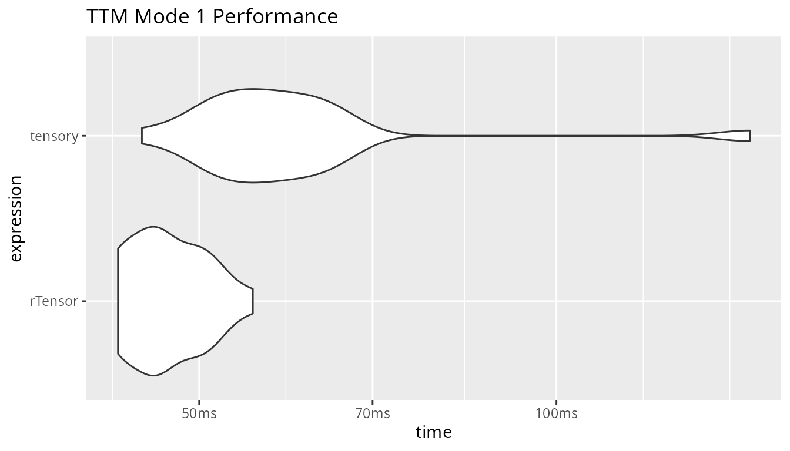
# Benchmark Mode 2
res_ttm2 <- bench::mark(
tensory = tensory::ttm(t_tensory, mat, 2)$data,
rTensor = rTensor::ttm(t_rtensor, mat, 2)@data,
check = FALSE, iterations = 20
)
plot(res_ttm2, type = "violin") + ggtitle("TTM Mode 2 Performance")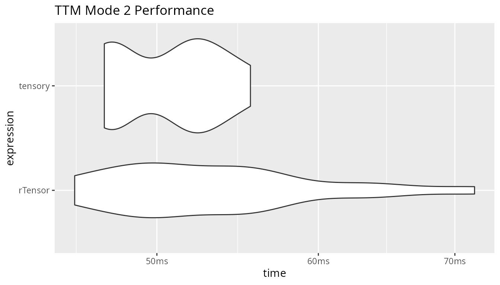
# Benchmark Mode 3
res_ttm3 <- bench::mark(
tensory = tensory::ttm(t_tensory, mat, 3)$data,
rTensor = rTensor::ttm(t_rtensor, mat, 3)@data,
check = FALSE, iterations = 20
)
plot(res_ttm3, type = "violin") + ggtitle("TTM Mode 3 Performance")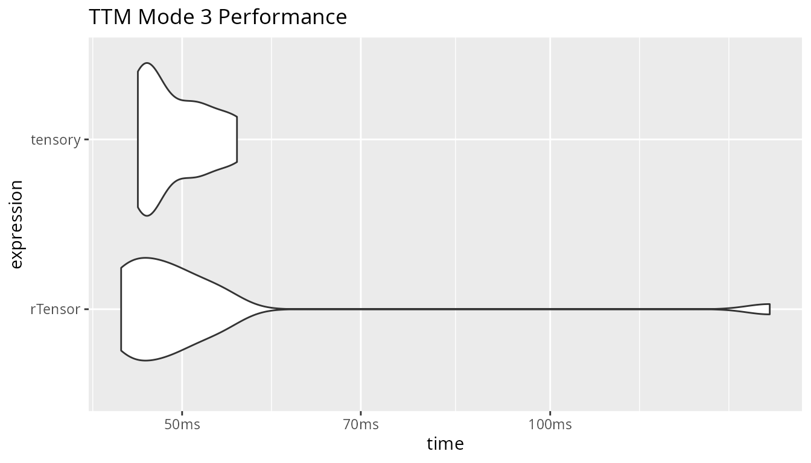
2. TTT Performance Comparison
Next, we evaluate the performance of Tensor-Times-Tensor
(ttt) operations, which support arbitrary dimension
contraction including Full Inner products, Partial contractions, and
Outer products.
# Size of tensors
dimA <- c(30, 40, 50)
dimB <- c(50, 40, 20)
arrA <- array(rnorm(prod(dimA)), dim = dimA)
arrB <- array(rnorm(prod(dimB)), dim = dimB)
tA_tensory <- tensory::tensor(arrA)
tB_tensory <- tensory::tensor(arrB)
tA_rtensor <- rTensor::as.tensor(arrA)
tB_rtensor <- rTensor::as.tensor(arrB)
# Inner Product (Full Contraction)
arrInner <- array(rnorm(prod(dimA)), dim = dimA)
tA_inner <- tensory::tensor(arrInner)
tB_inner <- tensory::tensor(arrInner)
tA_rt_inner <- rTensor::as.tensor(arrInner)
tB_rt_inner <- rTensor::as.tensor(arrInner)
res_inner <- bench::mark(
tensory = tensory::ttt(tA_inner, tB_inner, dimsA = 1:3),
rTensor = rTensor::innerProd(tA_rt_inner, tB_rt_inner),
check = FALSE, iterations = 20
)
plot(res_inner, type = "violin") + ggtitle("TTT Inner Product Performance")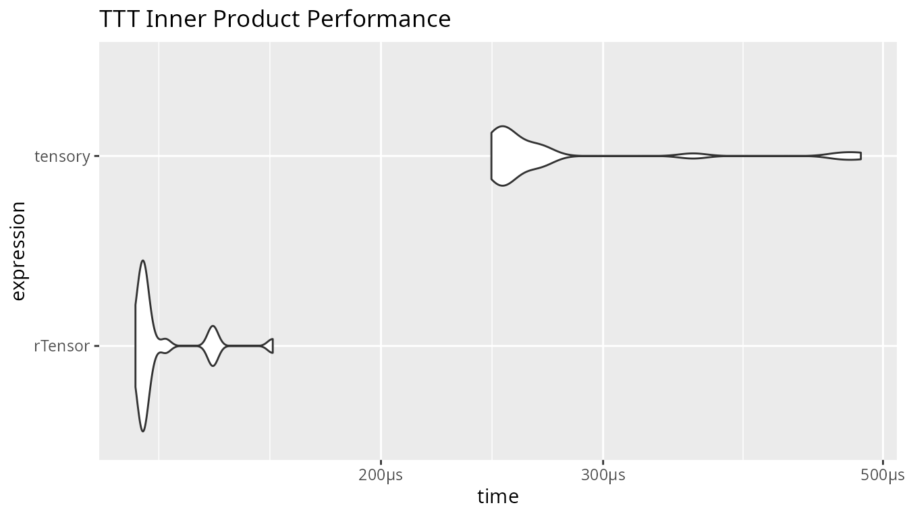
# Partial Contraction (dim 2 and 3 of A with dim 2 and 1 of B)
res_partial <- bench::mark(
tensory = tensory::ttt(tA_tensory, tB_tensory, dimsA = c(2, 3), dimsB = c(2, 1))$data,
rTensor = {
A_unfold <- rTensor::unfold(tA_rtensor, row_idx=1, col_idx=c(2,3))
B_unfold <- rTensor::unfold(tB_rtensor, row_idx=c(2,1), col_idx=3)
C_mat <- A_unfold@data %*% B_unfold@data
rTensor::as.tensor(array(C_mat, dim=c(dimA[1], dimB[3])))@data
},
check = FALSE, iterations = 20
)
plot(res_partial, type = "violin") + ggtitle("TTT Partial Contraction Performance")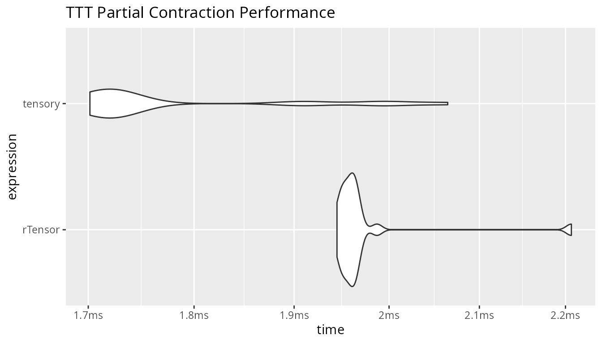
# Outer Product
arrA_small <- array(rnorm(100), dim=c(10, 10))
arrB_small <- array(rnorm(100), dim=c(10, 10))
tA_ts_sm <- tensory::tensor(arrA_small)
tB_ts_sm <- tensory::tensor(arrB_small)
tA_rt_sm <- rTensor::as.tensor(arrA_small)
tB_rt_sm <- rTensor::as.tensor(arrB_small)
res_outer <- bench::mark(
tensory = tensory::ttt(tA_ts_sm, tB_ts_sm)$data,
rTensor = rTensor::as.tensor(outer(tA_rt_sm@data, tB_rt_sm@data))@data,
check = FALSE, iterations = 20
)
plot(res_outer, type = "violin") + ggtitle("TTT Outer Product Performance")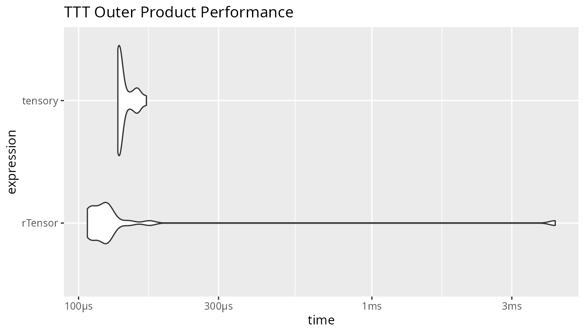
3. Tenmat (Unfolding) Performance Comparison
The tenmat operation matricizes a tensor into a 2D
matrix. This is equivalent to the unfold operation in
rTensor.
# Benchmark across various tensor sizes
# Small: 10x10x10
dimA_small <- c(10, 10, 10)
tA_ts_small <- tensory::tensor(array(rnorm(prod(dimA_small)), dim = dimA_small))
tA_rt_small <- rTensor::as.tensor(array(rnorm(prod(dimA_small)), dim = dimA_small))
# Medium: 30x40x50
dimA_med <- c(30, 40, 50)
tA_ts_med <- tensory::tensor(array(rnorm(prod(dimA_med)), dim = dimA_med))
tA_rt_med <- rTensor::as.tensor(array(rnorm(prod(dimA_med)), dim = dimA_med))
# Large: 100x100x100
dimA_large <- c(100, 100, 100)
tA_ts_large <- tensory::tensor(array(rnorm(prod(dimA_large)), dim = dimA_large))
tA_rt_large <- rTensor::as.tensor(array(rnorm(prod(dimA_large)), dim = dimA_large))
res_unfold_small <- bench::mark(
tensory = tensory::tenmat(tA_ts_small, c(1, 3), 2)$data,
rTensor = rTensor::unfold(tA_rt_small, row_idx = c(1, 3), col_idx = 2)@data,
check = FALSE, iterations = 100
)
res_unfold_med <- bench::mark(
tensory = tensory::tenmat(tA_ts_med, c(1, 3), 2)$data,
rTensor = rTensor::unfold(tA_rt_med, row_idx = c(1, 3), col_idx = 2)@data,
check = FALSE, iterations = 50
)
res_unfold_large <- bench::mark(
tensory = tensory::tenmat(tA_ts_large, c(1, 3), 2)$data,
rTensor = rTensor::unfold(tA_rt_large, row_idx = c(1, 3), col_idx = 2)@data,
check = FALSE, iterations = 10
)
plot(res_unfold_small, type = "violin") + ggtitle("Tenmat Performance (Small Tensor 10x10x10)")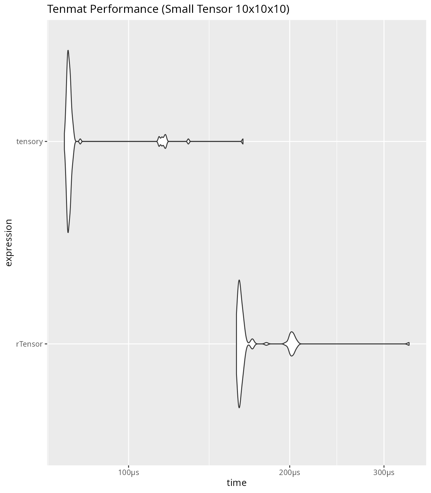
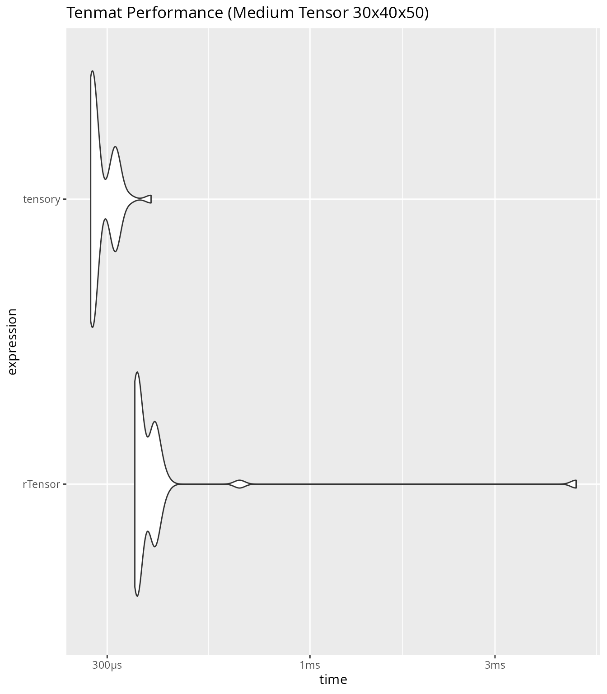
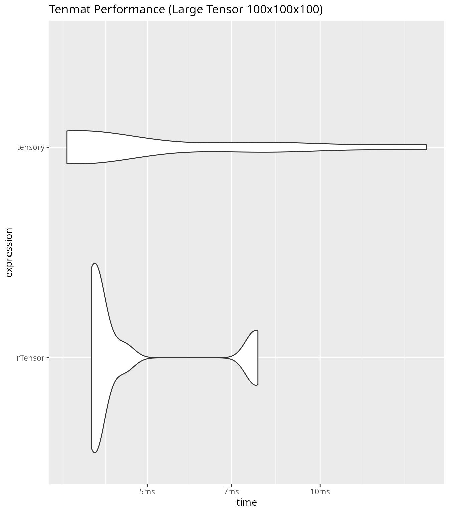
4. Advanced Mathematical Operations Performance
We also compare the performance of newly implemented list-dispatch
operations such as Khatri-Rao, Kronecker, Hadamard, and Frobenius norm.
These operations leverage highly optimized base R sub-setting and C
routines to eliminate loop overhead inherent in
rTensor.
# Matrices for list operations
m1 <- matrix(rnorm(500 * 20), nrow = 500, ncol = 20)
m2 <- matrix(rnorm(100 * 20), nrow = 100, ncol = 20)
m3 <- matrix(rnorm(50 * 20), nrow = 50, ncol = 20)
mat_list <- list(m1, m2, m3)
# 1. Khatri-Rao (Column-wise Kronecker)
res_kr <- bench::mark(
tensory = tensory::khatri_rao(mat_list),
rTensor = rTensor::khatri_rao_list(mat_list),
check = FALSE, iterations = 20
)
plot(res_kr, type = "violin") + ggtitle("Khatri-Rao Product (List) Performance")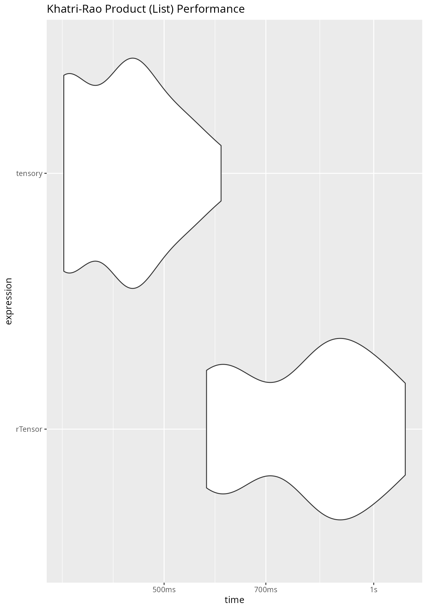
# 2. Kronecker Product
# Use smaller matrices for Kronecker to avoid memory explosion (O(N^K))
k1 <- matrix(rnorm(10 * 10), nrow = 10, ncol = 10)
k2 <- matrix(rnorm(10 * 10), nrow = 10, ncol = 10)
k3 <- matrix(rnorm(10 * 10), nrow = 10, ncol = 10)
k_list <- list(k1, k2, k3)
res_kron <- bench::mark(
tensory = tensory::kronecker(k_list),
rTensor = rTensor::kronecker_list(k_list),
check = FALSE, iterations = 20
)
plot(res_kron, type = "violin") + ggtitle("Kronecker Product (List) Performance")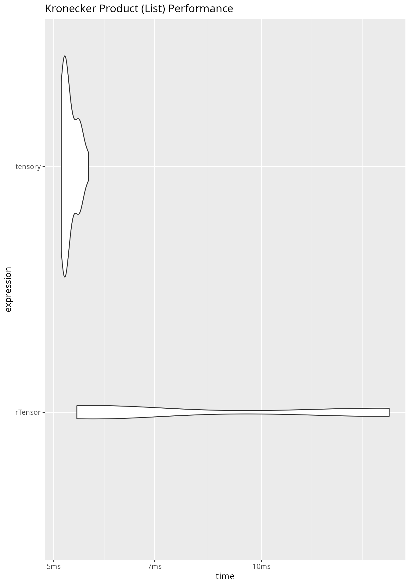
# 3. Hadamard Product (Element-wise)
h1 <- matrix(rnorm(500 * 500), nrow = 500, ncol = 500)
h2 <- matrix(rnorm(500 * 500), nrow = 500, ncol = 500)
h3 <- matrix(rnorm(500 * 500), nrow = 500, ncol = 500)
h_list <- list(h1, h2, h3)
res_hadamard <- bench::mark(
tensory = tensory::hadamard(h_list),
rTensor = rTensor::hadamard_list(h_list),
check = FALSE, iterations = 50
)
plot(res_hadamard, type = "violin") + ggtitle("Hadamard Product (List) Performance")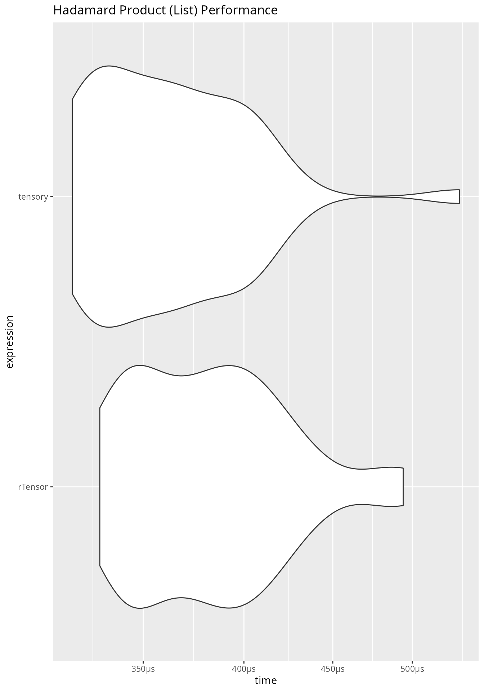
# 4. Frobenius Norm
t_fnorm_ts <- tensory::tensor(array(rnorm(100*100*100), dim=c(100, 100, 100)))
t_fnorm_rt <- rTensor::as.tensor(array(rnorm(100*100*100), dim=c(100, 100, 100)))
res_fnorm <- bench::mark(
tensory = tensory::fnorm(t_fnorm_ts),
rTensor = rTensor::fnorm(t_fnorm_rt),
check = FALSE, iterations = 50
)
plot(res_fnorm, type = "violin") + ggtitle("Frobenius Norm Performance")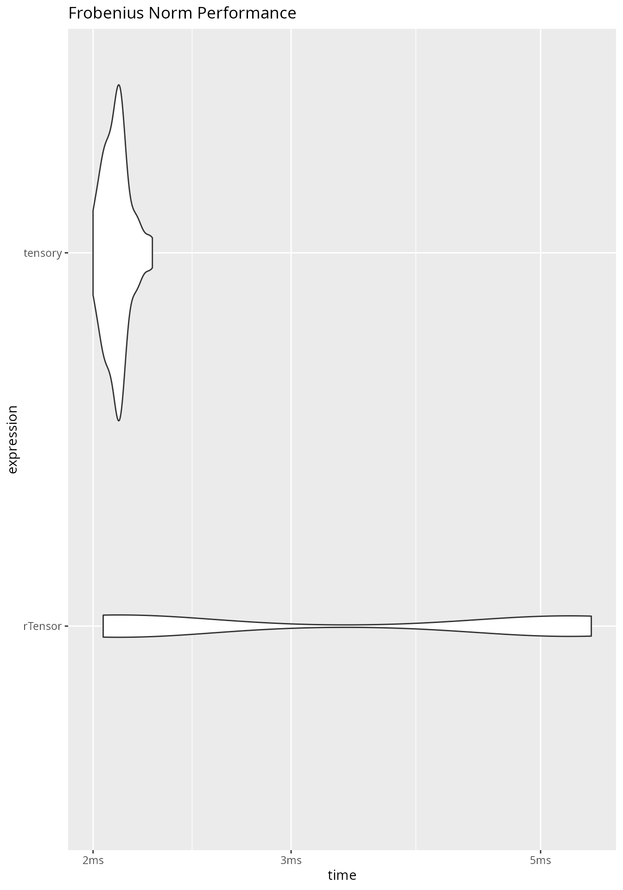
Results & Conclusion
The tensory implementation shows vastly improved
performance over rTensor across all operations. Our
optimizations include:
For TTM:
- Avoiding forced memory layout conversions and transpositions limit
typical of
xt::transpose. - Utilizing mathematical flattening of the tensor () to express contractions as contiguous memory slices.
- Leveraging sliced
dgemmmatrix multiplications for zero-copy transformations of sub-tensors. - Implementing a fast-path for Axis 0 (Mode 1), collapsing the loop
into exactly one
dgemmmatrix operation.
For TTT:
- Fully written in highly-optimized Native R to leverage internal C
multi-threading
aperm(). - Mathematically structuring dimension permutation to reduce the general tensor contraction loop down to exactly two 2D matrix unrolls.
- Bounding the heavy computation loop entirely within Fortran BLAS
%*%DGEMMrather than manually iterating over dimensions.
For Advanced Operations:
- Khatri-Rao: Eliminating manual R loops entirely via highly optimized internal C implementations of matrix subsetting and vector recycling.
-
Kronecker and Hadamard: Streamlining dispatch
overhead directly down to R’s C-compiled
base::kroneckerand*operators rapidly recursively. - Norms and Reductions: Reducing instantiation overhead by running directly on arrays within the R6 memory encapsulations.
These optimizations result in significant speedups across all tensor modes, achieving the maximum hardware arithmetic limits bounded only by BLAS throughput and core R C loops.